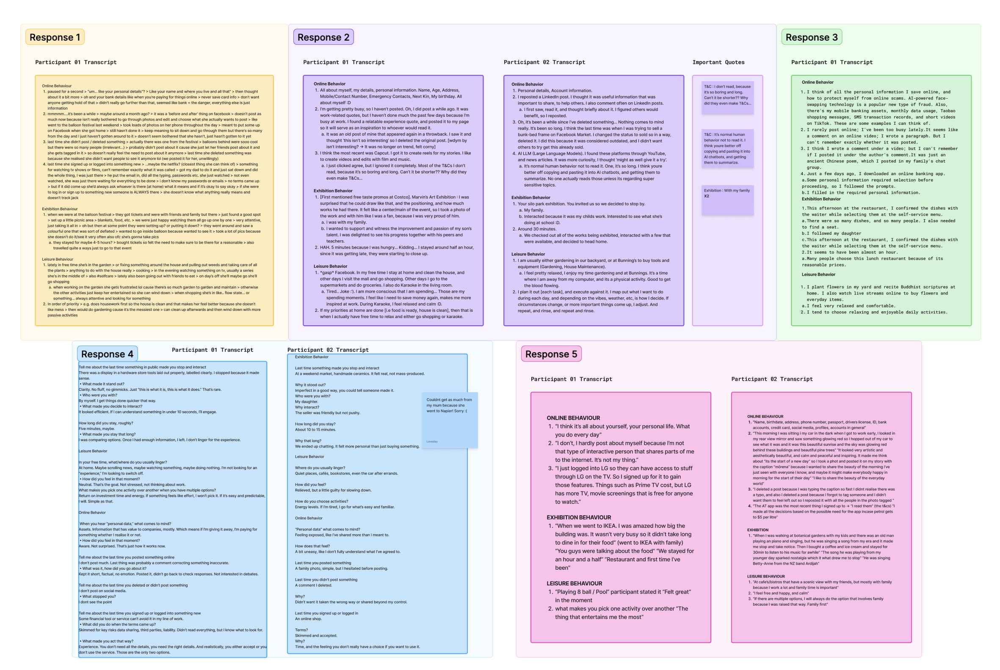
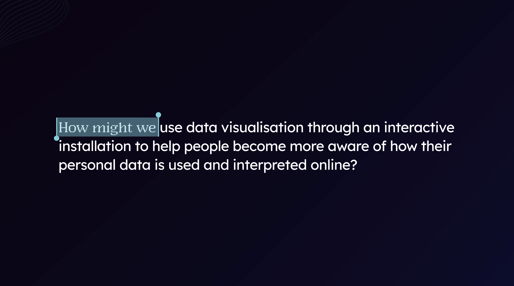
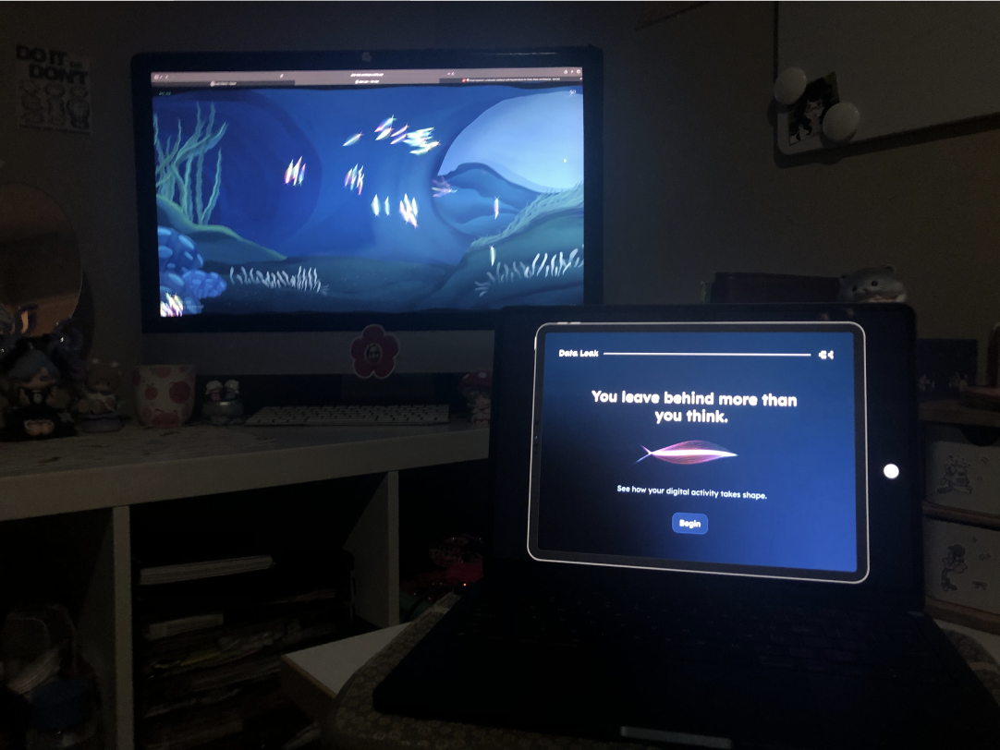
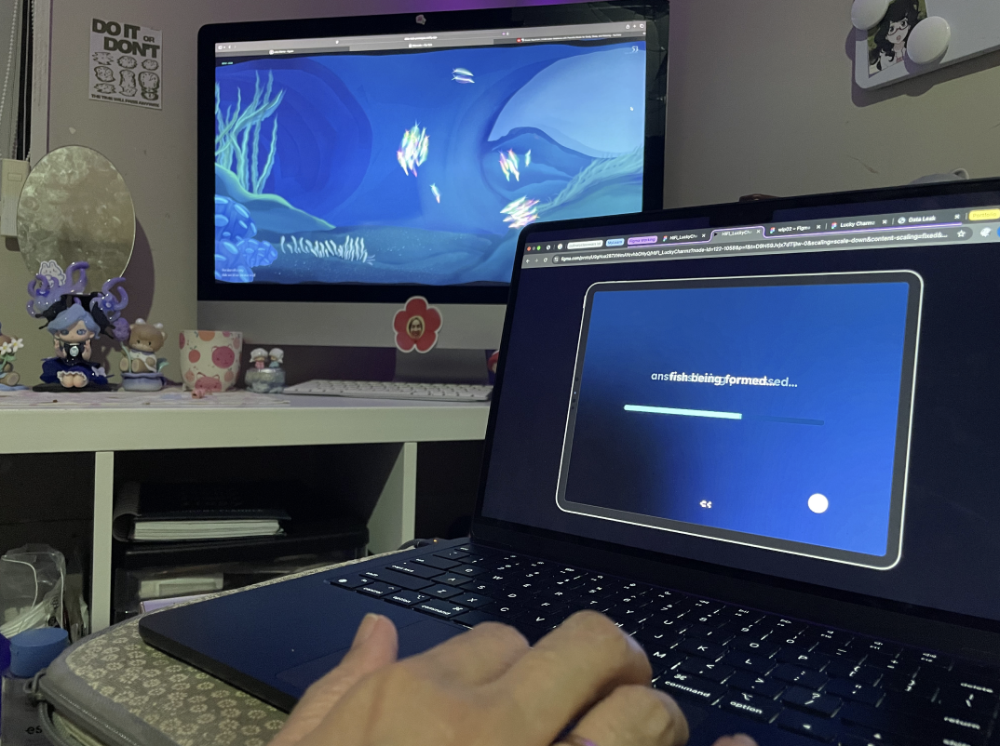
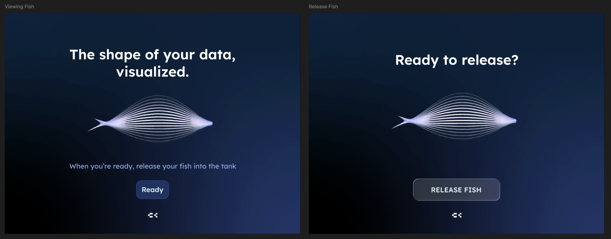
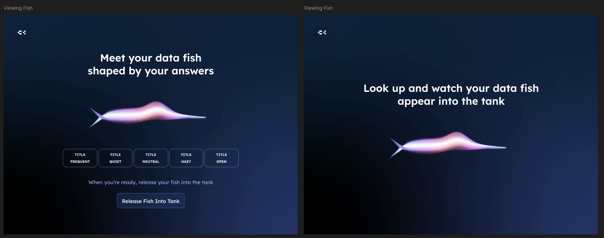
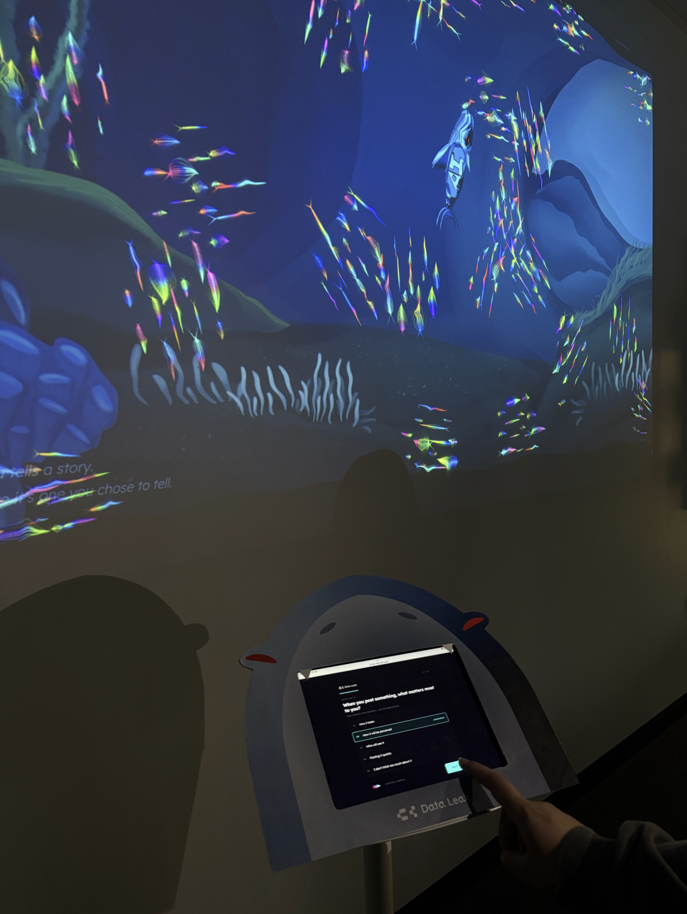
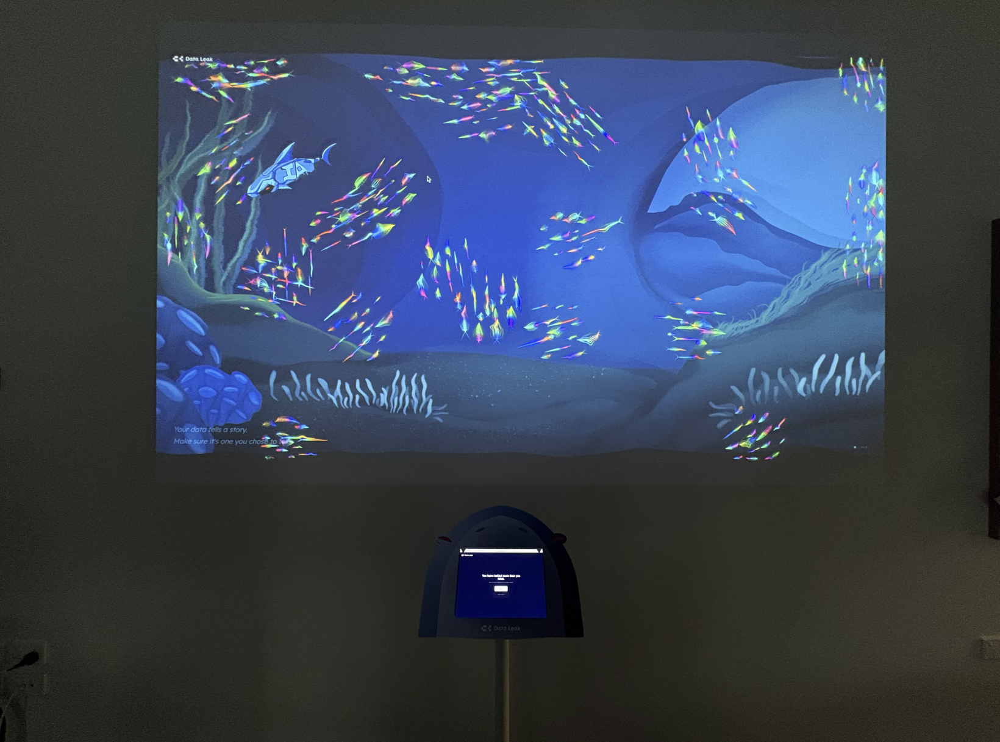
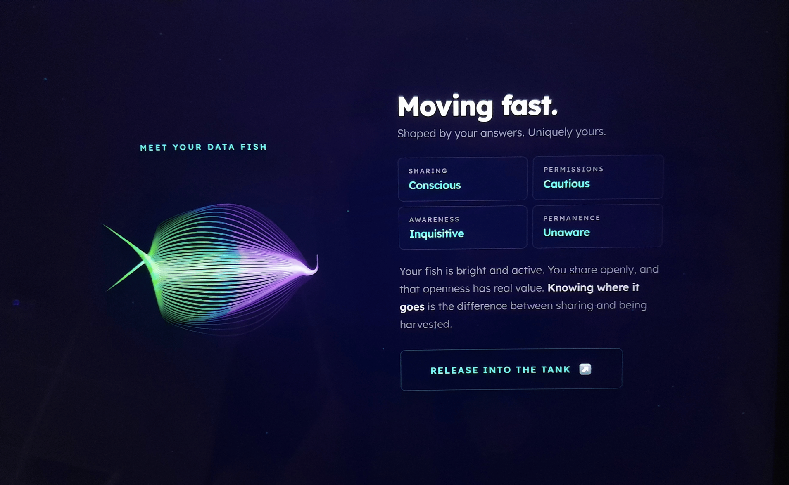

People are constantly inputting personal information and data online without fully realizing the
permanence of it, or where it travels after submission. Digital platforms have become increasingly
integrated into everyday life, and the movement and storage of personal data is often invisible to users,
making it difficult to understand the scale of information being collected, shared, and preserved over
time.
Through this project, we aimed to help users become more aware of their online habits and better
understand how their data continues to exist within digital systems through the use of an interactive
experience and data visualization.
THE CHALLENGE / BRIEF
WHAT ARE WE SOLVING?
Through this project, we wanted to utilize data visualization to help users understand
in a simple way how their data exists alongside others.
PROCESS
USER INTERVIEWS
To better understand our users perceptions of their online behavior and how they engage
with exhibitions, we conducted a series of user interviews.

(the first round of user interviews)
From these interviews, we found that :
Many users tended to dismiss permissions and privacy agreements when signing up for digital platforms.
Participants were more likely to attend family-oriented events than independantly explore
personal-interest exhibitions.
Users values low-pressure, casual leisure activities that felt open and approachable
RESEARCH QUESTION

USER TESTING
From there we developed a test version of the exhibition, and proof tested the digital experience of our exhibition :


From this we found that with a lack of the explainer video, it was hard for the users
to make the connection between the concept of fish symbolizing fish swimming in the 'sea of data' so the
interactive members went back to the questionnaire screens to update the copy of the landing screen.
UI UDATES
Based on user testing, I went back to the screens to update the copy and UI so that users could better connect the visuals with the idea of 'data fish' and to make the 'upload' flow clearer.


THE FINAL OUTCOME
Found that the most effective way to get them into the hobby/habit, is simply providing
them with the
experience and letting them freely explore.
(this is a visual representation of what the Exhibition would look like, placed in Silo
Park, Auckland CBD, Auckland 1010)



REFLECTION this is me testing if i messed up
Through the development of this project, --- I really enjoy experience design and building campaigns. It was fun -- In progress :D